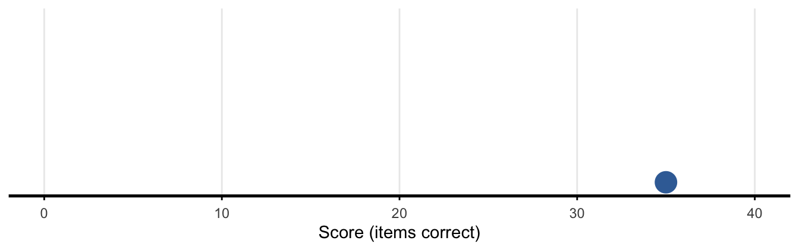
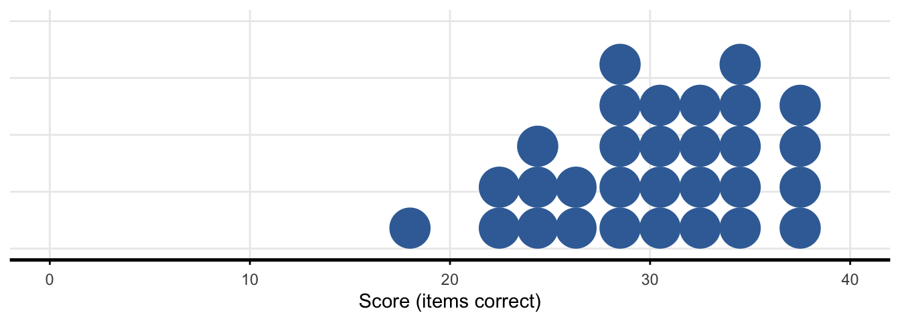
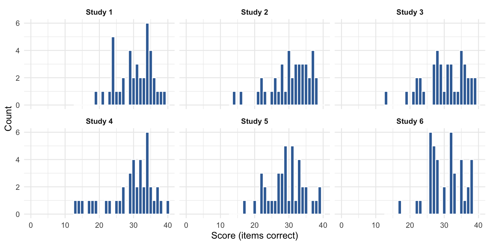
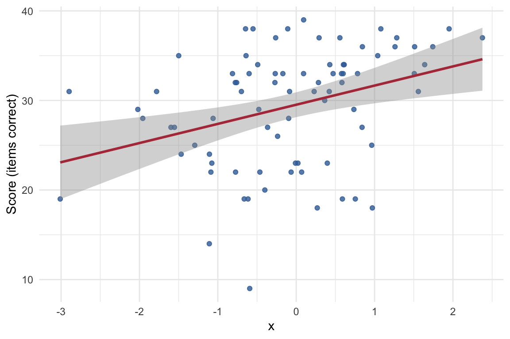

library(ggdist)
source("sampling-distributions.R")sampling-distributions.R: simulating and plotting test scores
Walkthrough: how the script works, and how to use it in Quarto
Aims
sampling-distributions.R simulates scores on a hypothetical 0–40 item vocabulary test, from the trial (item) level up, and draws the synthetic data half of the sampling/measurement-error narrative: one dot → two dots → a “pile of dots” showing a sample’s distribution → a histogram → a grid of histograms (repeated studies) → a scatterplot against a continuous covariate. It’s the data-generating and plotting counterpart to testing-sequence.R’s icon sequence (same narrative, numbers instead of pictograms).
The simulation is deliberately built trial-level up rather than generating a continuous score and rounding/clipping it: every simulated person’s score is the sum of 40 independent correct/incorrect item responses, so it is structurally impossible for a simulated score to fall outside [0, 40] — there’s no clipping step anywhere in the script, because none is needed.
After working through it, you should be able to:
- explain why
mu,reliability/sd_true, andn_itemsjointly determine the simulation rather than being three free knobs; - generate a sample, a repeated-studies grid, and a covariate-correlated sample of your own;
- predict, roughly, how a requested
r_with_xwill be attenuated at a givenreliability.
Prerequisites / assumptions
- Packages:
ggplot2, andggdistfor the dot-pile figures (plot_dotpile(),plot_dotpile_grid()). - Sourcing: standalone — no other script in this set needs to be sourced first.
- Reader background: some familiarity with classical test theory terms (reliability, true score) is helpful but not required — the key ideas are explained below. Basic
ggplot2familiarity assumed.
How it works: the process
\[ \text{Ability (logit scale):} \quad \theta_i \sim N(\theta_\mu, \theta_\sigma) \] \[ \text{Per-item probability:} \quad p_i = \text{plogis}(\theta_i) \] \[ \text{Observed score:} \quad Y_i \sim \text{Binomial}(40, p_i) \quad \in \{0, \dots, 40\} \]
A Binomial(40, p_i) draw is the vectorized equivalent of summing 40 independent Bernoulli (correct/incorrect) trials, so the model above is the trial-level process described in the aims, just computed efficiently rather than looped item-by-item.
flowchart LR
A["calibrate_ability()\nsolve theta_mu, theta_sigma\nto hit target mu + reliability\n(or mu + sd_true)"] --> B["simulate_vocab_data()\ndraw theta_i per person,\np_i = plogis(theta_i),\nscore_i ~ Binomial(40, p_i)"]
B --> C["plot_dots() / plot_dotpile() /\nplot_histogram() / plot_scatter()"]
B --> D["simulate_studies()\nrepeat simulate_vocab_data()\nper independent 'study'"]
D --> E["plot_histogram_grid() /\nplot_dotpile_grid()\n(facet_wrap(~study))"]
The central design idea: you don’t set the ability distribution’s mean and spread directly. You set the things that matter pedagogically — the test’s mean score (mu) and its reliability (reliability, or alternatively a target spread sd_true) — and calibrate_ability() numerically solves for the underlying theta_mu/theta_sigma that reproduce them, because for a fixed test length, mean/reliability/spread are mathematically linked, not three independently free knobs.
Element-by-element walkthrough
Calibration machinery: expect_theta() and implied_moments()
expect_theta <- function(f, theta_mu, theta_sigma) {
integrate(function(theta) f(theta) * dnorm(theta, theta_mu, theta_sigma),
lower = theta_mu - 10 * theta_sigma,
upper = theta_mu + 10 * theta_sigma)$value
}expect_theta() computes \(E[f(\theta)]\) for \(\theta \sim N(\theta_\mu,
\theta_\sigma)\) by plain numerical integration (base R integrate(), no extra dependency) — used to get exact expectations like \(E[p_i]\) or \(E[p_i^2]\) without resorting to Monte Carlo.
implied_moments <- function(theta_mu, theta_sigma, n_items) {
p_bar <- expect_theta(plogis, theta_mu, theta_sigma)
p2_bar <- expect_theta(function(th) plogis(th)^2, theta_mu, theta_sigma)
pq_bar <- expect_theta(function(th) plogis(th) * (1 - plogis(th)), theta_mu, theta_sigma)
mean_score <- n_items * p_bar
var_true <- n_items^2 * (p2_bar - p_bar^2)
var_error <- n_items * pq_bar
reliability <- var_true / (var_true + var_error)
# ...
}Given a candidate (theta_mu, theta_sigma), this works out what mean score, “true”-score variance (between-person spread), measurement-error variance (within-person, item-sampling noise), and reliability (var_true / (var_true + var_error)) that choice implies — i.e. it runs the model forward analytically. calibrate_ability() then runs this backward: searching for the (theta_mu, theta_sigma) whose implied_moments() output matches your targets.
implied_moments(theta_mu = 0, theta_sigma = 1.3, n_items = 40)$mean_score
[1] 20
$var_true
[1] 98.79781
$var_error
[1] 7.530055
$reliability
[1] 0.9291808
$sd_true
[1] 9.939709
$sd_total
[1] 10.31154Solving for ability parameters: calibrate_ability()
calibrate_ability <- function(mu, reliability = 0.80, sd_true = NULL, n_items = 40) {
# ...
}Two calibration targets are supported, and they’re mutually exclusive — for a fixed mu and n_items, fixing one determines the other:
reliability(the default path) — “how repeatable is this test”; use this when the figure is about test-retest/parallel-forms reliability.sd_true— “how spread out is this population”; use this when a figure needs independent control of between-person spread (e.g. two panels with the same mean but visibly different spread), supplied instead ofreliability.
Internally, both paths use the same robust pattern: a nested uniroot() search (an outer search over theta_sigma, and for each candidate, an inner search over theta_mu so the mean score matches mu exactly), with the search bracket doubled automatically if the initial range doesn’t contain a root, and an informative error (rather than a cryptic numerical failure) if the target isn’t achievable — e.g. reliability above about 0.99 would require an implausibly large, numerically unstable ability spread for a 40-item test. sd_true additionally has a closed-form feasibility check: the theoretical ceiling is sqrt(mu * (n_items - mu)), approached only as the ability spread goes to infinity.
cal <- calibrate_ability(mu = 30, reliability = 0.80)
cal$moments$mean_score
[1] 30.00001
$var_true
[1] 27.27292
$var_error
[1] 6.818174
$reliability
[1] 0.8000013
$sd_true
[1] 5.222348
$sd_total
[1] 5.838758Simulating one sample: simulate_vocab_data()
cal <- calibrate_ability(mu, reliability = reliability, sd_true = sd_true, n_items = n_items)
# ... correlation setup (see below) ...
theta <- cal$theta_mu + cal$theta_sigma * theta_z
p_correct <- plogis(theta)
observed_score <- rbinom(n, size = n_items, prob = p_correct)After calibration, simulating is simple: draw standardized ability theta_z per person (optionally correlated with a covariate — see next section), scale/shift it to theta, convert to p_correct via plogis(), and draw observed_score as a single vectorized rbinom(n, 40, p_correct) call — bounded to [0, 40] by construction.
d <- simulate_vocab_data(n = 10, mu = 30, reliability = 0.80, seed = 1)
d id x theta p_correct observed_score
1 1 -0.6264538 2.3552299 0.9133490 35
2 2 0.1836433 1.5173065 0.8201415 32
3 3 -0.8356286 0.7621749 0.6818257 25
4 4 1.5952808 -0.4279059 0.3946265 16
5 5 0.3295078 2.0663094 0.8875852 35
6 6 -0.8204684 1.1925918 0.7672043 29
7 7 0.4874291 1.2140589 0.7710163 36
8 8 0.7383247 1.9310581 0.8733665 35
9 9 0.5757814 1.8394827 0.8628875 33
10 10 -0.3053884 1.6697080 0.8415369 33range(simulate_vocab_data(n = 10000, seed = 2)$observed_score)[1] 5 40Inducing a covariate correlation: r_with_x
This is the part of the script most worth reading carefully if you’re adapting it, because of attenuation: any correlation involving a noisy observed variable is weaker than the correlation involving the underlying true ability, because measurement error adds noise that dilutes the relationship. Classical test theory gives \(\text{corr}(\text{observed}, \theta) = \sqrt{\text{reliability}}\), so to hit a target observed-score correlation r_with_x, the script works backward through that relationship:
max_r <- sqrt(reliability)
if (abs(r_with_x) > max_r) {
warning(...) # cap r_with_x at the achievable ceiling
r_with_x <- sign(r_with_x) * max_r
}
r_theta_x <- if (r_with_x == 0) 0 else r_with_x / max_r
# theta_z is then a mix of standardized x and independent noise,
# correlated with x at r_theta_x so that, after measurement error,
# the *observed* score ends up correlated with x at (approximately) r_with_x
Noter_with_x is on the observed scale, and has a ceiling
Two consequences follow from the attenuation logic above: (1) r_with_x is specified on the observed-score scale — i.e. it’s (approximately) the correlation you’ll actually see in plot_scatter(), not some larger hidden value; (2) at low reliability, only a limited range of r_with_x is achievable at all (capped at sqrt(reliability)), and the function warns rather than silently failing if you ask for more than that.
d_cor <- simulate_vocab_data(n = 2000, r_with_x = 0.5, seed = 3)
cor(d_cor$x, d_cor$observed_score)[1] 0.4922399One more detail is handled explicitly, and is worth seeing in code rather than just prose, because it was a real bug caught during development:
z <- rnorm(n)
if (r_theta_x == 0) {
theta_z <- z
} else {
xz <- as.numeric(scale(x))
if (anyNA(xz)) {
warning("x has zero variance (e.g. all identical values); r_with_x cannot be induced. Ignoring r_with_x.")
theta_z <- z
} else {
theta_z <- r_theta_x * xz + sqrt(1 - r_theta_x^2) * z
}
}
NoteA real bug this guard fixes
scale(x) is undefined (NaN) when n < 2 or x has zero variance, and 0 * NaN is NaN in R — so multiplying it in unconditionally, even at the default r_with_x = 0, would silently turn every theta (and hence every score) into NA. This exact case is n = 1, i.e. the simplest possible call. The fix is to skip the standardization path entirely whenever r_theta_x == 0, rather than relying on the multiplication to zero it out.
Repeated studies: simulate_studies() and simulate_parallel_forms()
studies <- simulate_studies(n_studies = 3, n_per_study = 15, seed = 4)
tapply(studies$observed_score, studies$study, mean) Study 1 Study 2 Study 3
32.40000 28.66667 30.46667 simulate_studies() just calls simulate_vocab_data() once per study (without resetting the seed between calls, so each study’s sample differs but the whole sequence stays reproducible from one top-level seed), row-binding the results with a study label — this is what feeds the _grid() plotting functions below.
simulate_parallel_forms() is a different use case: it draws one theta_i per person but two independent test administrations (form1, form2) from that same theta_i — i.e. the same person tested twice (or on two equivalent forms). This is how the script’s own reliability calibration can be checked empirically:
pf <- simulate_parallel_forms(n = 20000, mu = 30, reliability = 0.80, seed = 5)
cor(pf$form1, pf$form2)[1] 0.8006557Figures: plot_dots(), plot_dotpile(), plot_histogram(), plot_scatter(), and their _grid() variants
These are comparatively simple ggplot2 wrappers; the interesting parts are the choices, not the mechanics:
plot_dots()— one or two scores as points on a number line, withynudged just above 0 so points sit on the axis line rather than being bisected by it.plot_dotpile()— a sample’s distribution as discrete points viaggdist::stat_dots(), by design not a smoothed density curve or a binned histogram, so the figure reads as “these are the actual individual scores”, not an idealized shape.plot_dotpile_grid()— the faceted version;binwidthis fixed explicitly rather than left toggdist’s per-panel default, because that default sizes each panel’s dot diameter to that panel’s own tallest stack — which would make dots visibly different sizes across panels, undermining a “same scale, different samples” comparison.plot_histogram()/plot_histogram_grid()— standard binned histograms, for the “distribution looks approximately normal” step.plot_scatter()— score against a covariate, with an optionalgeom_smooth(method = "lm")fitted line.
plot_dots(d$observed_score[1])
plot_dotpile(simulate_vocab_data(n = 30, seed = 6)$observed_score)
plot_histogram_grid(simulate_studies(6, 40, seed = 7))
plot_scatter(simulate_vocab_data(n = 80, r_with_x = 0.5, seed = 8))`geom_smooth()` using formula = 'y ~ x'
Quarto usage / integration
Setup-chunk lines:
library(ggdist)
source("sampling-distributions.R")Real usage from doing-being-science.qmd — paired with testing-sequence.R’s icon, sharing one simulate_vocab_data() draw so the icon’s score label and the plotted point match:
```{r}
#| label: fig-one-score-dot
#| fig-cap: "Their score, as a point on the number line"
#| fig-width: 5
#| fig-height: 3.2
#| echo: false
plot_dots(d_one$observed_score)
```The repeated-studies pairing (icon grid + matching dotpile grid):
```{r}
#| label: fig-many-studies-dotpiles
#| fig-width: 8
#| fig-height: 5
plot_dotpile_grid(studies_sample, ncol = 3)
```Parameter quick reference (simulate_vocab_data())
| Parameter | Default | Meaning |
|---|---|---|
n |
— | Sample size. |
mu |
30 |
Target mean observed score (0–40 scale). |
reliability |
0.80 |
Target parallel-forms reliability; ignored if sd_true given. |
sd_true |
NULL |
Alternate calibration target: between-person “true” score SD. |
r_with_x |
0 |
Target correlation between the covariate x and the observed score. |
x, x_mean, x_sd |
NULL, 0, 1 |
Pre-specified covariate, or generated from N(x_mean, x_sd). |
n_items |
40 |
Number of test items. |
seed |
NULL |
Reproducibility. |
Common errors
| Message | Likely cause |
|---|---|
reliability = ... is not achievable at mu = ... |
Requested reliability is too close to 1 for the given mu/n_items (implausibly large ability spread). |
sd_true = ... is not achievable at mu = ... |
Requested sd_true exceeds the analytic ceiling sqrt(mu * (n_items - mu)). |
Warning: r_with_x = ... is not achievable at reliability = ... |
Requested correlation exceeds the sqrt(reliability) ceiling; value was capped. |
Warning: x has zero variance... |
x is constant (or n < 2); r_with_x can’t be induced and was ignored. |
Exercises
- Call
calibrate_ability(mu = 30, reliability = 0.95)and thencalibrate_ability(mu = 30, reliability = 0.99). Compare the two$moments$sd_truevalues. What happens if you pushreliabilitytoward0.999, and why does the script’s error message call that “implausibly large”? - Simulate two samples with the same
muandnbut differentreliability(e.g.0.6vs0.95), and plot both withplot_dotpile(). Which one’s spread looks bigger, and does that match whatimplied_moments()predicts? - Request
r_with_x = 0.9atreliability = 0.5viasimulate_vocab_data(). Confirm it warns and is capped, and computesqrt(0.5)by hand to check the cap matches. - Use
sd_trueinstead ofreliabilityto calibrate two samples with the same spread but different means (e.g.mu = 20vsmu = 35, bothsd_true = 5). Plot both as histograms side by side — do they look like plausible vocabulary-test distributions at both means? - Generate 6 studies with
simulate_studies(6, 15, seed = 1)(a smallnper study) and compareplot_histogram_grid()againstplot_dotpile_grid()for the same data. Which representation makes the sample-to-sample variability at smallneasier to see, and why?
See also
- testing-sequence-walkthrough.qmd — the icon-based half of the same sampling/measurement-error narrative; several slides pair one figure from each script using a shared simulated dataset.